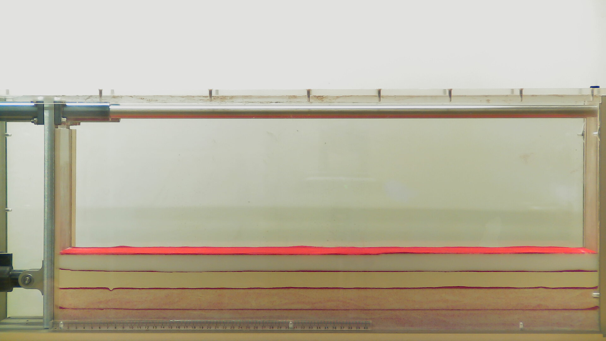
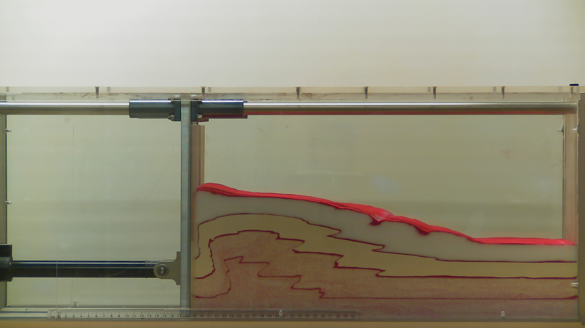

Exercises: Build your own Mountain belt#
Analogue Sandbox in Compression.#
The following exercice is based on Sandra McLaren teaching at The University of Melbourne.
Introduction#
Physical modeling of folding and faulting have been performed since the early days of Structural Geology. The traditional way of performing analogue experiments is by filling a box with materials such as clay, sand, plaster, silicone putty, honey etc. and to apply extension or contraction at the boundaries. Ideally the model geometry and physical properties of the material should be scaled proportionally. The kinematics of the model should also be similar to the natural example, with comparable rates of deformation and mechanical properties.
It practice, it is impossible to scale all the parameters appropriately and some sort of compromises must be found.
For a small physical model to realistically reproduce a natural example, we need to scale down the geometries and properties of the materials as best as we can.
Analogue experiments remain extremely useful to understand the processes and their interaction. They allow us to develop our understanding of tectonic deformation mechanism and style observed in natural systems.
In this practical we will run our own analogue modelling experiment to explore the controls on the structure and development of fold and thrust belts (the foreland of orogenic systems)


Learning outcomes#
At the completion of this practical you should:
Have developed skills in the design and management of experiments, including formulating hypotheses
Be able to document experimental methods and results in a laboratory report
Understand the major controls on fold and thrust belt evolution
Understand the geometry of structures formed in fold and thrust belts
Generic Skills#
This practical exercise will help you develop skills in:
Effective communication including written report writing
Critical thinking and the conceptualization of complex and abstract ideas
Problem-solving in new and unfamiliar tasks
Effective collaboration team-work
Only one sandbox is available so you will have to work as a team and make sure that everyone has an understanding of the different steps involved. The sandbox is a plexiglass-sided box with a motor-driven indenter at one end. Our experiment involves driving the indenter into the premade layers and observing and documenting how the layers of sand deform. As noted above, the experiment simulates the style of tectonic deformation we might observe in orogenic systems.
You will need:
Rulers: metre rules provided and smaller rulers also required
Protractor
Plain paper for sketching
Your phone for taking photos or recording video: A webcam on a tripod will be provided.
Points to consider#
As you advance the indenter, does the sand shorten and thicken uniformly or is the deformation localised (partitioned) along discrete planes?
How much deformation is required before the first fault forms? What is the dip of that fault?
Where do the new faults develop?
Do the fault angles change during the experiment? If so, do they get steeper or shallower?
Observe and describe the surface of the model as the deformation proceeds. Is it smooth or lumpy? If there are surface features, can you explain them in terms of the deformation observed in cross-section? What else happens to modify the surface?
How does the width of the deformed zone change with time? How is the deformation partitioned at any particular time?
Calculate the overall shortening for the experiment
Plot the number of faults vs the indenter displacement
What areas of the model are likely to be affected by ongoing deformation? Consider this for a land-use scenario, mitigating natural hazards from earthquakes in active fold and thrust belts
How do you think the ongoing deformation might change the geomorphology of the region?
How well did the results match up with your predictions about (1) the factors that control the deformation and (2) the geometry of the structures that developed.
Exercise#
Formulate hypotheses about the factors that may control deformation within your sandbox. Use your theoretical knowledge of crustal deformation to inform your answers.
Note the composition of the layers in your sandbox
Make predictions about the geometry of the structures you might expect to observe. You might want to provide sketches and also consider how the geometry might change with time. Remember to indicate the position of the indenter and its sense of movement.
Measure and record the pre-deformational dimensions of the material within the sandbox. Use the ruler provided on the base of the box to provide a reference throughout your experiment.
Begin the deformation experiment! Note that you will need to carefully control the speed of the indenter. Work slowly to begin with to see how the motor responds, it can be a bit touchy, it might seem to be going really slow, but then a small change makes it go really quite fast!
Observe carefully the changes in the model as your experiment proceeds. You might want to time the experiment. You can stop and start the indenter at any time. This is useful for pausing the experiment to make measurements or sketches at key stages.
At key intervals sketch the geometry of the model and make observations, such as those listed in the table below. You may also want to record other details, such as the orientation of fold axial surfaces – you can measure these accurately with a protractor.
Photograph your model at key intervals. Your group should also piece these photos together to make a video of your experiment; timelapse on your phone works well
Do not overcontract your sandbox. The motor should automatically stop when you reach the maximum contraction but please observe closely just in case.
Displacement of indenter (cm) |
Length of model (cm) |
Maximum wedge thickness (cm) |
# of faults |
# of folds |
Dip of faults |
|---|---|---|---|---|---|